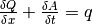
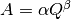
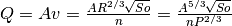
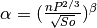
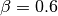
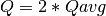
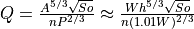
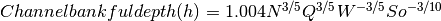
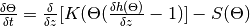

8. Data¶
Contents
Data format¶
In general data format is netCDF (version3 or version4)
For the mask map (to define the area of calculation) or the stations (to define the time series outputs) in can be either netCDF, Geotiff or PCRaster maps
Data storage structure¶
project
│- README.txt
│
└--areamaps
│ └- maskmap, stationmap
│
└--landcover
│ └---forest
│ │ │- CropCoefficientForest_10days
│ │ │- interceptcapForest10days
│ │ │- maxRootdepth, minSoilDepthFrac
│ │ └- rootFraction1, rootFraction2
│ │
│ └---grassland (same var as forest)
│ │
│ └---irrNonPaddy (same var as forest)
│ │
│ └---irrPaddy (same var as forest)
│
└───landsurface
│ │- fractionlandcover, global_clone
│ │
│ └---albedo
│ │ └- albedo
│ │
│ └---topo
│ │ └- dz_Rel_hydro1k, elvstd , tanslope
│ │
│ └---waterDemand
│ └- domesticWaterDemand, industryWaterDemand, irrigationArea, efficiency
│
└───soil
│ └- alpha, forest_alpha, lamdba, forest_lambda, ksat, forest_ksat, thetas, forest_thetas, thetar, forest_thetar
│ └-cropgrp
│
└---groundwater
│ └- kSatAquifer, recessionCoeff, specificYield
│
└---routing
│- ldd, catchment, cellarea
│
└---kinematic
│ └- chanbnkf, chanbw, changrad, chanleng, chanman
│
└---lakereservoirs
└- lakeResArea, lakeResDis,lakeResID, lakeResType, lakeResVolRes, lakeResYear,
└- smallLakesRes, smalllakesresArea, smalllakesresDis, smallwatershedarea
Static data¶
Mask map¶
- mask map or coordinates to model only regions or catchments
- maps or coordinates for station to print time series
Landsurface¶
Digital elevation model and river channel network¶
The model uses a digital elevation model and its derivate (e.g. standards deviation, slope) as variables for the snow processes and for the routing of surface runoff. The Shuttle Radar Topography Mission - SRTM (Jarvis et al., 2008) is used for latitudes <= 60 deg North and DEM Hydro1k (US Geological Survey Center for Earth Resources Observation and Science)is used for latitudes > 60 deg North CWATM uses a local drainage direction map which defines the dominant flow direction in one of the eight neighboring grid cells (D8 flow model). This forms a river network from the springs to the mouth of a basin. To be compliant with the ISIMIP framework the 0.5° drainage direction map (DDM30) of (Döll and Lehner, 2002) is used. For higher resolution e.g. 5’ different sources of river network maps are available e.g. HydroSheds (Lehner et al., 2008) – DRT (Wu et al., 2011) and CaMa-Flood (Yamazaki et al., 2009). These approaches uses the same hydrological sound digital elevation model but differ in the upscaling methods. Fang et al. (2017) shows the importance of routing schemes and river networks in peak discharge simulation. For CWATM the DDM30 is used for 0.5° and DRT is used for 5’.

Figure 1: Digital elevation based on SRTM and DEM Hydro1k for 30’‘

Figure 2: Digital elevation based on SRTM for 30’ and 5’

Figure 3: Standard deviation of elevation based on SRTM and 5’
River channel maps¶
Channel maps are describing the geometry like the length, slope, width and depth of the main channel inside a grid cell. Data used to get the geometry are mainly taken from elevation model and channel network.
Methodology¶
Flow through the channel is simulated using the kinematic wave equations. The basic equations used are the equations of continuity and momentum. The continuity equation is:

The momentum equation can also be expressed as (Chow et al., 1988):

The coefficients α and β are calculated by putting in Manning’s equation

Solving this for α and β gives:
 and 
Channel length¶
The network upscaling method of Wu et al. 2011 is tracing the finer river network inside the coarser resolution. Channel length of 5’ is traced from original SRTM channel length with the diagonal path taken to be √2 ∙ straight path.
Channel gradient¶
Channel gradient (or channel slope) is the average gradient of the main river inside a cell.
The approach taken here is to take the elevation from where the fine resolution channel enters the coarser grid cell and the elevation where it leaves the grid cell. Channel gradient is then calculated as:
Channel gradient = (elevation[in] –elevation[out]) / channel length.

Figure x: Channel gradient at 5 in % or tan(α)’
Manning’s roughness¶
Manning’s roughness coefficient (n) is one of the calibration parameter in CWATM. But on subbasin level an estimation of the spatial distribution of n is needed. n normally range between 0.025 (low land rivers) and 0.075 (mountainous rivers with a lot of vegetation, gravels). A low n = smooth surface results in a faster travel time and higher peaks. A high n = rough surface results in s slower travel time and lower peaks. Inspection of the riverbed will reveal characteristics related to roughness. A treatment of the use of Manning’s coefficients is in McCuen (1998). Below is a first-approximation of Manning’s coefficients for some widely observed beds:
n = 0.04 - 0.05 Mountain streams
n = 0.035 Winding, weedy streams
n = 0.028 - 0.035 Major streams with widths > 30m at flood stage
n = 0.015 Clean, earthen channels
For the base map of Manning a regression function is used with 0.025 as the minimum value for flatland rivers with large upstream areas. A maximum of 0.015 is added for flatland rivers and small upstream areas (upstream area dependent) and another maximum of 0.030 is added if in mountainous areas (elevation dependent):
Manning =0.025 + 0.015 * min(50/upstream,1) + 0.030*min(DEM/2000,1)
Where:
upstream: upstream catchment area [km]
DEM: elevation from Digital elevation model [m]

Figure x: Manning’s roughness coefficient for 5’
Channel Bottom Width¶
The channel bottom width is calculated in two steps with the first step using a simply regression between channel width and upstream area and the second uses a better correlated one between average discharge and channel width. First the channel bottom width is calculated by a simply regression between upstream catchment area and width:
Channel width=upstreamArea ×0.0032
This first map is used to run CWATM to get an estimate on average discharge.
In the second step a regression formula from Pistocchi et al. 2006 is used to calculate the channel bottom width with average discharge as regressor, because discharge seems to be better correlated to width than upstream area. This is quite obvious if you look at small alpine catchment with high precipitation and therefore high discharge and on the other side at big, almost semiarid catchments on the Iberian peninsula with low average discharge:
Channel width=average Q ^ 0.539

Figure x: Channel width at 5’
Channel bankful depth¶
Instead of deriving channel hydraulic properties from a non linear correlation with the upstream area we are using the Manning’s equation to get a better estimate. But for the first estimate (same as for channel bottom width) we use a correlation with upstream area:
Channel bankful depth = 0.27 upstreamArea^0.33
In the second step we use the Manning’s equation. We adopt a rectangular cross section and we assume depth is small compared to width. So the perimeter is assumed to be:
P = 1.01 * channel bottom width
Discharge for bankful discharge is assumed to be two times the average discharge (Qavg)


As we now know all the other variables we can solve this equation for bankful depth with some assumption:
This leads to the equation:

Soil and soil hydraulic properties¶
Modeling of unsaturated flow and transport processes can be done with the 1D Richard equation, which requires a high spatial and temporal distribution of the soil hydraulic properties
 1D Richard equation
For simplification the 1D Richard equation is transfered to the VG-Mualem (1976) term to descrive unsaturated hydraulic conductivities which uses the soil water retention function from van Genuchten model (1980)
The parameters for the van Genuchten model are needed to simulated soil water transport.
Harmonized World Soil Database¶
The Harmonized World Soil Database 1.2 (HWSD) - Version 1.2 7 March, 2012 was developed by the Land Use Change and Agriculture Program of IIASA (LUC) and the Food and Agriculture Organization of the United Nations (FAO). The HWSD is a 30 arc-second raster database with over 16000 different soil mapping units that combines existing regional and national updates of soil information worldwide – the European Soil Database (ESDB), the 1:1 million soil map of China, various regional SOTER databases (SOTWIS Database), and the Soil Map of the World – with the information contained within the 1:5000000 scale FAO-UNESCO Soil Map of the World. The resulting raster database is linked to harmonized soil property data (FAO et al., 2012)

Figure x: Harmonized World Soil Database Index
From the HWSD the standard soil properties like texture, porosity, soil minerals (% of sand, clay), organic mater and bulk density are used. For example Bulk density second soil layer 5-30 cm depth:

Figure x: Bulk density second soil layer 5-30 cm at 5’
Pedotransfer function Rosetta3¶
Parameters for the unsaturated zone is done by using a pedotransfer function.
A pedotransfer is used from Zhang and Schaap 2016 to transfer the standard soil properties to the van Genuchten model parameters.
Rosetta3 code is available at: http://www.cals.arizona.edu/research/rosettav3.html

Figure x: Soil volumetric moisture content (θs) [%] second soil layer 5-30 cm at 5’

Figure x: Saturated hydraulic conductivity (Ks) [cm/day] second soil layer 5-30 cm at 5’
Groundwater¶
For groundwater modeling maps of the recession constant of the hydraulic conductivity and the storage coefficient are needed. Gleeson et al., 2014 can provide data for this.
Global RecessionConstant GLIM: [1/day] based on drainage theory (liner reservoir) developed by Kraaijenhoff van de Leur (1958)
Global SatHydraulicConductivity [Gleeson et al., 2011] Mean permeability of consolidated and unconsolidated geologic units below the soil [log10 m2]
Global StorageCoefficient [m/m]: specific yields or storage coefficients

Figure x: Recession constant GLIM: [1/day] at 5’
Lakes and Reservoirs¶
The HydroLakes database http://www.hydrosheds.org/page/hydrolakes (Bernhard Lehner et al., 2011; Messager, Lehner, Grill, Nedeva, & Schmitt, 2016) provides 1.4 million global lakes and reservoirs with a surface area of at least 10ha. CWATM differentiate between big lakes and reservoirs which are connected inside the river network and smaller lakes and reservoirs which are part of a single grid cell and part of the runoff concentration within a grid cell. Therefore the HydroLakes database is separated into “big” lakes and reservoirs with an area ≥ 100 km2 or a upstream area ≥ 5000 km2 and “small” lakes which represents the non-big lakes. All lakes and reservoirs are combined at grid cell level but big lakes can have the expansion of several grid cells. Lakes bigger than 10000 km2 are shifted according to the ISIMIP protocol.
Temporal data for each year¶
Crop coefficient¶
Based on: MIRCA2000—Global data set of monthly irrigated and rainfed crop areas around the year 2000. http://www.uni-frankfurt.de/45218023/MIRCA (Portmann et al., 2010)
Land cover¶
Land cover is used to calculate fraction of water, forest, irrigated area, rice irrigated area, sealed (impermeable area) and the remaining fraction for each cell. For each fraction the soil module runs separately. The total runoff of each cell is calculated by weighting the cell according to the different fractions.
Source: https://lta.cr.usgs.gov/GLCC (US Geological Survey Center for Earth Resources Observation and Science)

Sealed¶
Urban area or impervious surface area (ISA) based on.
Future projection based on:
Transient, future land use pattern generated by the LU model MAgPIE (Popp et al. 2014; Stwevanovic et al. 2016), assuming population grpwth and economioc as in SSP2 and climate change scenario RCP6.0

Figure x: Sealed area in 2010 at 5’
Albedo¶
Global Albedo dataset from Muller et al., (2012) http://www.globalbedo.org
Continous temporal data¶
Meteorological data¶
- max, min, avg temperature [K]
- humidity (relative[%] or specific[%])
- surface pressure [Pa]
- radiation (short wave and long wave downwards) [W m-2]
- windspeed [m/s]
If potential evaporation is already calculated in a prerun or from external source
- Precipitation [Kg m-2 s-1] or [m] or [mm] (can be adjusted by a conversion factor in the settings file)
- Temperature (avg) [K]
- Potential evaporation [Kg m-2 s-1] or [m] or [mm] (can be adjusted by a conversion factor in the settings file)
From observation: (see ISI-MIP 2a)
- WFDEI.GPCC (Weedon et al. 2014) WFD—Watch forcing data set: 0.5 3/6 hourly meteorological forcing from ECMRWF reanalysis (ERA40) bias-corrected and extrapolated by CRU TS and GPCP (rainfall) and corrections for under catch
- PGMFD v.2 - Princeton (Sheffield et al. 2006),
- GSWP3 (Kim et al.)
- MSWEP (Beck et al. 2017) .
From Global Circulation models GCMs (see ISI-Mip 2b)
- HadGem2-ES (Met Office Hadley Centre, UK)
- IPSL-CM5A-LR (Institut Pierre-Simon Laplace, France)
- GFDL-ESM2M (NOAA, USA)
- MIROC-ESM-CHEM (JAMSTEC, AORI, University of Tokyo, NIES, Japan)
- NorESM1-M (Norwegian Climate Centre, Norway)
References¶
- Beck, H. E., A. I. J. M. Van Dijk, V. Levizzani, J. Schellekens, D. G. Miralles, B. Martens and A. De Roo (2017). “MSWEP: 3-hourly 0.25° global gridded precipitation (1979-2015) by merging gauge, satellite, and reanalysis data.” Hydrology and Earth System Sciences 21(1): 589-615.
- Döll, P. and B. Lehner (2002). “Validation of a new global 30-min drainage direction map.” Journal of Hydrology 258(1): 214-231.
- Döll, P. and S. Siebert (2002). “Global modeling of irrigation water requirements.” Water Resources Research 38(4): 81-811.
- Elvidge, C. D., Tuttle, B. T., Sutton, P. C., Baugh, K. E., Howard, A. T., Milesi, C., Bhaduri, B., Nemani, R. (2007). Global Distribution and Density of Constructed Impervious Surfaces. Sensors (Basel, Switzerland), 7(9), 1962-1979. doi:10.3390/s7091962
- Gleeson, T., N. Moosdorf, J. Hartmann and L. P. H. Van Beek (2014). “A glimpse beneath earth’s surface: GLobal HYdrogeology MaPS (GLHYMPS) of permeability and porosity.” Geophysical Research Letters 41(11): 3891-3898.
- Hansen, M. C., P. V. Potapov, R. Moore, M. Hancher, S. A. Turubanova, A. Tyukavina, D. Thau, S. V. Stehman, S. J. Goetz, T. R. Loveland, A. Kommareddy, A. Egorov, L. Chini, C. O. Justice, and J. R. G. Townshend. 2013. “High-Resolution Global Maps of 21st-Century Forest Cover Change.” Science 342 (15 November): 850–53. Data available on-line from: http://earthenginepartners.appspot.com/science-2013-global-forest.
- Hengl, T., J. M. de Jesus, R. A. MacMillan, N. H. Batjes, G. B. M. Heuvelink, E. Ribeiro, A. Samuel-Rosa, B. Kempen, J. G. B. Leenaars, M. G. Walsh and M. R. Gonzalez (2014). “SoilGrids1km — Global Soil Information Based on Automated Mapping.” PLOS ONE 9(8): e105992.
- Jarvis, A., H. I. Reuter, A. Nelson and E. Guevara (2008). Hole-filled SRTM for the globe Version 4, available from the CGIAR-CSI SRTM 90m Database (http://srtm.csi.cgiar.org).
- Kim, H., S. Watanabe, E.-C. Chang, K. Yoshimura, Y. Hirabayashi, J. Famiglietti and T. Oki “Century long observation constrained global dynamic downscaling and hydrologic implication [in preparation].”
- Lehner, B., C. R. Liermann, C. Revenga, C. Vörösmarty, B. Fekete, P. Crouzet, P. Döll, M. Endejan, K. Frenken, J. Magome, C. Nilsson, J. C. Robertson, R. Rödel, N. Sindorf and D. Wisser (2011). “High-resolution mapping of the world’s reservoirs and dams for sustainable river-flow management.” Frontiers in Ecology and the Environment 9(9): 494-502.
- Lehner, B., K. Verdin and A. Jarvis (2008). “New global hydrography derived from spaceborne elevation data.” Eos 89(10): 93-94.
- Messager, M. L., B. Lehner, G. Grill, I. Nedeva and O. Schmitt (2016). “Estimating the volume and age of water stored in global lakes using a geo-statistical approach.” 7: 13603.
- Muller, P. J., P. Lewis, J. Fischer, P. North and U. Framer (2012). The ESA GlobAlbedo Project for mapping the Earth’s land surface albedo for 15 Years from European Sensors., paper presented at IEEE Geoscience and Remote Sensing Symposium (IGARSS) IEEE Geoscience and Remote Sensing Symposium (IGARSS) 2012. Munich, Germany.
- Portmann, F. T., S. Siebert and P. Döll (2010). “MIRCA2000—Global monthly irrigated and rainfed crop areas around the year 2000: A new high-resolution data set for agricultural and hydrological modeling.” Global Biogeochemical Cycles 24(1): n/a-n/a.
- Sheffield, J., G. Goteti and E. F. Wood (2006). “Development of a 50-year high-resolution global dataset of meteorological forcings for land surface modeling.” Journal of Climate 19(13): 3088-3111.
- Siebert, S., P. Döll, J. Hoogeveen, J. M. Faures, K. Frenken and S. Feick (2005). “Development and validation of the global map of irrigation areas.” Hydrology and Earth System Sciences 9(5): 535-547.
- US Geological Survey Center for Earth Resources Observation and Science Hydro1k. U. E. Land Processes Distributed Active Archive Center (LP DAAC), Sioux Falls, SD.
- Weedon, G. P., G. Balsamo, N. Bellouin, S. Gomes, M. J. Best and P. Viterbo (2014). “The WFDEI meteorological forcing data set: WATCH Forcing data methodology applied to ERA-Interim reanalysis data.” Water Resources Research 50(9): 7505-7514.
- Wösten, J. H. M., A. Lilly, A. Nemes and C. Le Bas (1999). “Development and use of a database of hydraulic properties of European soils.” Geoderma 90(3-4): 169-185.
- Wu, H., J. S. Kimball, N. Mantua and J. Stanford (2011). “Automated upscaling of river networks for macroscale hydrological modeling.” Water Resources Research 47(3).
- Yamazaki, D., T. Oki and S. Kanae (2009). “Deriving a global river network map and its sub-grid topographic characteristics from a fine-resolution flow direction map.” Hydrology and Earth System Sciences 13(11): 2241-2251.
- Zhang, Y., Schaap, M.,(2017): Weighted recalibration of the Rosetta pedotransfer model with improved estimates of hydraulic parameter distributions and summary statistics (Rosetta3),Journal of Hydrology,Volume 547,Pages 39-53,ISSN 0022-1694,https://doi.org/10.1016/j.jhydrol.2017.01.004. (http://www.sciencedirect.com/science/article/pii/S0022169417300057)
- Zhao, F., Veldkamp, T. I. E., Frieler, K., Schewe, J., Ostberg, S., Willner, S., Schauberger, B., Gosling, S., N. , Müller Schmied, H., Portmann, F., T. , Leng, G., Huang, M., Liu, X., Tang, Q., Hanasaki, N., Biemans, H., Gerten, D., Satoh, Y., Pokhrel, Y., Stacke, T., Ciais, P., Chang, J., Ducharne, A., Guimberteau, M., Wada, Y., Kim, H., & Yamazaki, D. (2017). The critical role of the routing scheme in simulating peak river discharge in global hydrological models. Environmental Research Letters, 12(7), 075003